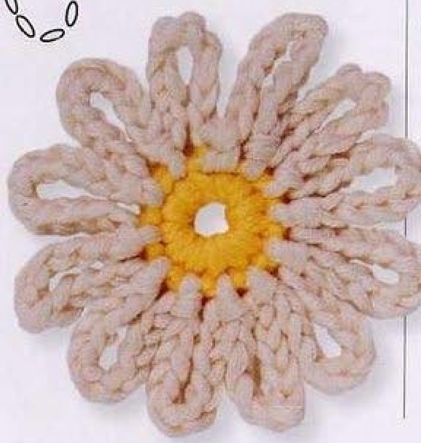
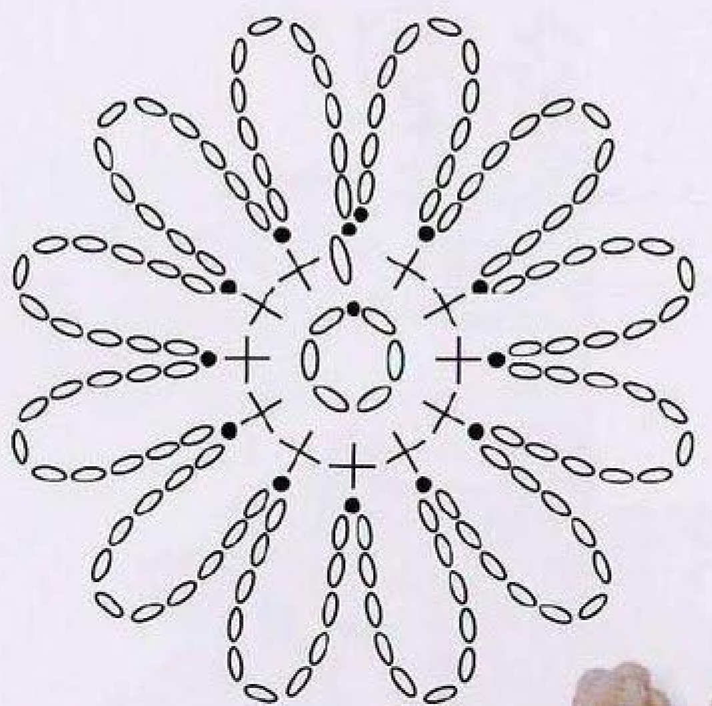
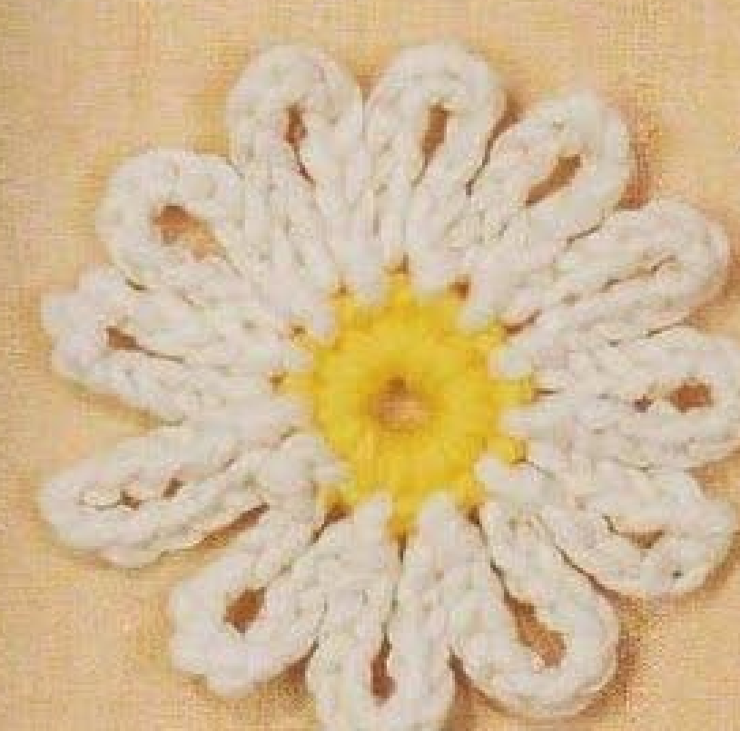

A crochet Lazy Daisy gets its shape from open loops rather than solid petals. A small yellow ring supports twelve white chain petals, giving the finished cotton flower an airy outline. This guide follows pattern 44 in Lesley Stanfield’s 100 Flowers to Knit & Crochet, with explanations in US crochet terminology and the source photographs and chart beside the relevant steps.

Key Takeaways
- Use DK cotton in yellow for the center and white for the petals.
- Make a six-chain foundation ring, then a center round with twelve counted positions.
- Each petal is an eleven-chain loop secured with a slip stitch.
- The starting chain counts as one center position; do not add a twelfth single crochet.
- The original pattern does not specify hook size, yardage, gauge, or finished dimensions.
CROCHET LAZY DAISY FLOWER PATTERN
Project: One yellow-centered flower with twelve white open chain-loop petals. The source uses UK terms; the directions below use US terms. The stitch sequence and original colors are retained. Material-selection and handling advice outside the compact instructions is additional practical guidance.
| Skill level | Not specified in the entry. Practical guidance: suitable for a maker comfortable with chain, single crochet, and slip stitch. |
|---|---|
| Base size | One flower. Finished dimensions are not specified; yarn, hook, and tension determine the result. |
| Yarn | DK cotton: yellow (A) and white (B). |
| Quantity | Not specified. Use matching leftover yarn and keep enough for a complete petal round. |
| Hook and gauge | Not specified. Choose a hook suitable for your cotton and assess the fabric with a sample. |
| Notions | Scissors, a blunt yarn needle, and an optional stitch marker. |
| US abbreviations | ch = chain; sc = single crochet; sl st = slip stitch; RS = right side. UK dc in the source means US sc here. |
| Foundation | With yellow A, ch 6. Sl st into the first chain to form a ring. |
| Round 1 (RS) | Ch 1, then work 11 sc into the ring. Using white B, sl st into the starting ch 1 to close the round. Count 12 positions: the starting chain plus 11 sc. |
| Round 2 | Continue with white B. Repeat ch 11, sl st into the next center position 12 times. The final slip stitch goes into the join slip stitch of Round 1. Count 12 chain-loop petals. |
| Finishing | Fasten off invisibly, secure the ends, and arrange the loops evenly. Avoid pulling the chain loops tight while weaving in ends. |
Understand the Open-Loop Construction
Look at the finished flower before choosing a hook. The yellow center is a ring with an opening, not a stuffed ball or a solid disk. The white petals surround that ring as separate loops. You can see the background through each petal. That empty space is part of the design, so filling the loops with extra stitches would produce a different flower.
The whole motif has a foundation and two rounds. The first round establishes attachment positions around the ring. The second round repeatedly sends a chain away from the center and brings it back to the next attachment position. There is no separate strip to coil, no additional petal layer, and no sewing required to construct the flower itself. Keeping those differences in mind helps when comparing this daisy with other flower patterns.
A useful way to follow the pattern is to track three numbers separately: six foundation chains, twelve center positions, and eleven chains per petal. The foundation count controls the ring, the center count controls how many petals you can attach, and the petal-chain count controls loop length. One number cannot be substituted for another simply because the resulting flower still looks plausible.
Choose Cotton and Prepare Your Materials
The source specifies DK cotton in yellow and white. Use yarns of similar thickness so the center and petals sit comfortably together. A much heavier white yarn can make the loops crowd the ring, while a much finer white yarn can make them appear sparse. The pattern does not give a brand, fiber blend alternative, exact weight in grams, or yardage allowance.
Choose a hook that lets you make even chains without forcing the yarn through tight loops. A yarn label can give a starting point, but it is not a hook specification from this pattern. Work a short chain sample and a few single crochet stitches first. If the chain is rigid, reconsider your grip or hook. If it feels loose and unstable, make another sample before beginning the flower.
Set out scissors and a blunt yarn needle for the finishing ends. A removable marker can identify the starting chain of the first round, especially with small stitches or fluffy cotton. Keep both yarn balls accessible during the center round because white is introduced at the closing join. The yellow end should remain long enough to secure without distorting the opening.
Material note: Hook size, gauge, finished size, and yarn quantity are not supplied in the source entry. Treat any sample you make as a practical test for your materials, rather than as a required measurement from the original pattern.
Translate the Source Terms and Read the Chart

The book uses UK crochet terminology. Its “dc” is double crochet in UK terms, which is single crochet in US terms. In this guide, sc means that US single crochet. Chain and slip stitch keep their familiar meanings. There are no US double crochet stitches in the compact Lazy Daisy instructions. Misreading UK dc as US dc would make the center taller and change the proportions.
Read the chart from the small ring outward. The little oval symbols show chains, the center stitch symbols represent the short stitches around the ring, and the dark attachment points indicate slip stitches. The elongated groups of chain symbols form the petals. Use the chart to understand placement, then use the written directions to count the actual eleven chains in each repeat.
The starting chain of the center round has a counting role. It stands alongside eleven worked single crochet stitches, giving twelve positions for the next round. That explains why the written stitch total is twelve even though you make only eleven single crochet stitches into the foundation ring. Adding another single crochet to reach twelve actual sc would create an extra attachment position.
Step 1: Form the Yellow Foundation Ring
Begin with yellow A and make six chains. Before joining, check that the short chain has not twisted around itself. Insert the hook into the first chain and make a slip stitch to close the circle. Keep the opening accessible because the center stitches are worked into the ring rather than individually into the foundation chains.
Hold the ring near the join and gently open the center with your fingertips. You need enough room to insert the hook eleven times without searching through the chain edge. Keep the starting yarn tail clear of the hook. It may sit alongside the ring while you work, but do not let it accidentally become a stitch or a separate strand that you count.
The six-chain ring is part of the original construction. A magic ring may look like a convenient substitution, but it changes the foundation and can close the visible center opening. For a flower that follows this source example, keep the chain ring. If the opening seems larger than expected, check chain tension before altering the recipe.
Step 2: Make Twelve Center Positions
With the right side facing, chain one. Work eleven single crochet stitches directly into the ring. Move the completed stitches gently around the foundation as necessary to make space. Each sc is completed normally: insert the hook into the ring, draw up a loop, then yarn over and draw through both loops on the hook.
Pause before closing the round. Count the eleven sc, then identify the starting chain as the twelfth counted position. If you used a marker, it should be marking that starting chain rather than a new stitch added after it. The stitches should form a yellow ring without a crowded cluster of extra stitches at the join.
Close the round by slipping into the starting chain one using white B. This is where the source changes color. Drawing the white yarn through the join leaves white ready for the petal round. Keep the yellow and white ends separate so you can secure each later. Do not chain an extra transition stitch unless it is one of the eleven chains for the first petal.
Count checkpoint: The center contains the starting chain plus eleven sc. Together these give twelve positions. The join closes the round; it does not add a thirteenth petal position.
Step 3: Work the Twelve White Petals
Continue with white B and chain eleven for the first petal. Let the chain extend naturally from the center. Bring the hook back toward the yellow ring and slip stitch into the next center position. The chain now forms an open loop between its starting point and the new attachment point. Do not work back down the chain or fill its center.
Repeat that same sequence around the flower: chain eleven, then slip stitch into the next position. Keep the chain tension as consistent as you can. It helps to count each petal chain before making its slip stitch, rather than trying to count a completed curved loop afterward. Rest the flower briefly on a flat surface when checking the growing outline.
The last repeat closes into the slip stitch that joined the first round, as directed in the source. That final placement brings the loop sequence back to its beginning. Count twelve completed open petals before fastening off. If you have only eleven, look for a missed attachment near the starting chain. If there are thirteen, check whether you treated the join as an extra position.
After each few petals, spread the existing loops with your fingers and look at their roots. A chain crossing over another root can resemble an extra petal even when the counts are correct. Rearrange the loops gently before deciding that you need to undo stitches. The open design should remain flexible while the center provides a stable attachment ring.
A Useful Counting Insight
The first round and second round are linked by attachment positions, not by the number of chains in each petal. Twelve center positions support twelve loops. Every loop still contains eleven chains. Check those two counts independently whenever the outline looks uneven.
Finish the Ends and Shape the Flower
The source calls for an invisible fasten-off. Cut the white yarn with a usable finishing tail, draw it through, and use a yarn needle to tidy the final join so it follows the neighboring stitch line. Avoid leaving a bulky knot on top of the petal roots. Secure the tail through the back of the established stitches without pulling the final loop shorter.
Weave the yellow ends through the back of the center. Keep the central opening visible and do not use the tail to cinch the ring closed. Work through several existing stitches in a way that holds the end securely, then trim after checking the front. Follow your yarn’s handling needs if the cotton is especially smooth or prone to slipping.
Arrange the twelve loops around the center with your fingers. Compare their lengths and spread any loops that have folded over one another. The source entry does not specify blocking dimensions or an exact pressing method for this flower. If you choose to dampen and shape it, follow the yarn-care instructions and test your method first rather than applying heat directly.

Troubleshoot Counts, Tension, and Petal Shape
Why does one petal look shorter?
Count the chains in that loop before adjusting the whole flower. A petal with ten chains instead of eleven is a construction error; a petal with the correct count may simply have tighter chain tension or a tight attachment slip stitch. Compare it with the adjacent loops. If a count is wrong, undo only far enough to correct that repeat while leaving sound earlier work intact.
Why is the yellow center crowded?
Check for an extra single crochet in the first round. The pattern asks for eleven sc alongside the starting chain, not twelve sc plus that chain. Also check whether the stitches were worked into the ring rather than into separate foundation chains. Move stitches gently to distribute them before judging the shape, and confirm the foundation contains six chains.
Why do the loops overlap?
Some overlap while handling an open motif is normal. Lay it flat and separate the loops at their roots. If the crowding remains, compare yarn thicknesses and check for an additional petal repeat. Do not remove a correctly counted loop solely to make the flower appear more spaced out. First establish whether the issue is handling, materials, or an actual stitch-count mistake.
Why is the join noticeable?
Excessively tight joining tension can pull the first and last petals together. A loose color-change tail can create the opposite effect. Inspect the center before trimming the ends, tidy the tails on the back, and preserve the source’s final attachment point. A tidy join should fit among the neighboring petal roots without becoming another raised petal or a second center ring.
Customization and Sizing Without Changing the Recipe
The original colors are yellow A and white B. If you make a second version in different colors, describe it as your variation. You can still preserve the six-chain ring, twelve center positions, and eleven-chain petals. Keeping those numbers unchanged makes it easier to compare samples and understand what a yarn or color substitution actually changed.
Finished size is not given. Measure your own flower after arranging the loops, and record the yarn and hook you used. For an attachment with limited space, make one sample before producing several motifs. A finer yarn and suitable hook can change the result, but the source does not provide a graded sizing system or promise a particular diameter.
Variation tip: Start with the original stitch counts and change one material choice at a time. Adding chains, extra rounds, or filled petals creates an adapted design and should be labeled clearly.
Use the Finished Daisy as an Applique
The flat ring and open loops make this flower suitable for decorative placement on a bag, a fabric panel, or a handmade accessory. These are suggested uses, not additional projects specified in the Lazy Daisy entry. Test the placement on the actual surface and check that the petals can sit freely rather than being crushed against an edge or seam.
When sewing the motif to a backing, consider stitching through the center and selected secure attachment points. Avoid stitching across every petal opening unless that is the appearance you want. Use thread or yarn that suits the backing and examine the reverse side as you work. Attachment should hold the flower without pulling the center into a different shape.
Frequently Asked Questions
Does the pattern use US double crochet?
No. The source’s UK double crochet translates to US single crochet. The petal round uses chains and slip stitches. Keeping the terminology consistent matters because taller stitches would change the center and the relative length of the petals.
Are these photographs step-by-step progress pictures?
No. The photographs show completed Lazy Daisy flowers, and the chart shows the stitch arrangement. They help you compare the finished shape and understand construction, but they do not document intermediate stages. The written explanation supplies the sequence without claiming that a finished-flower photograph shows an unfinished round.
Can I add a filled center?
The original has a chain-ring opening. Filling it or covering it with another piece is a customization, not a missing instruction. Make and assess the source-based version first if your goal is to match the pictured flower.
Lazy Daisy at a Glance
- DK cotton in yellow and white.
- Six-chain joined foundation ring.
- Starting chain plus eleven sc gives twelve center positions.
- Twelve white petals, each made with eleven chains and a slip stitch.
- Invisible finish with gently arranged open loops.
Conclusion
Lazy Daisy is a useful exercise in consistent chains and careful counting. Its recognizable outline depends on twelve open loops, a yellow center ring, and a tidy color-change join. Use the complete pattern card as a working checklist, then return to the detailed steps whenever placement or terminology needs clarification. Save the idea and click the Pin to return to the pattern when you are ready to make it.
Source and Tags
Source: Lesley Stanfield, 100 Flowers to Knit & Crochet, pattern 44 Lazy Daisy, instructions on printed page 68 and directory photograph on printed page 41. These correspond to PDF pages 62 and 36 in the supplied scan. Source photographs and the chart are included with attribution. The instructions are explained in US terminology; added material and use suggestions are identified as practical guidance.
Crochet Lazy DaisyCotton FlowersLoop PetalsCrochet AppliqueUS Crochet TermsFlower Pattern